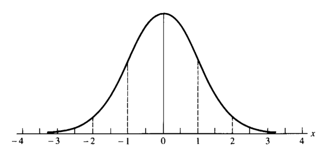
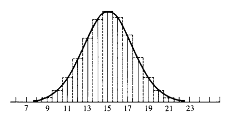
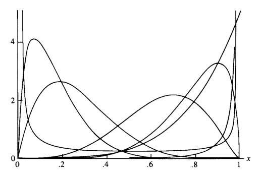
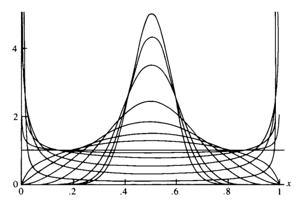
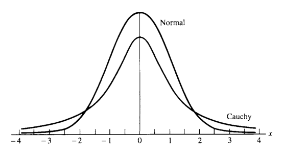
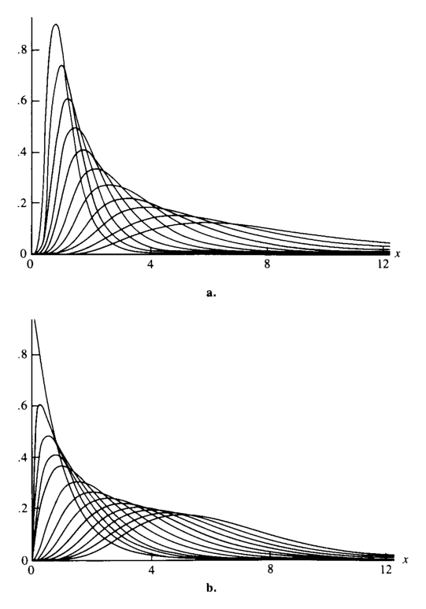
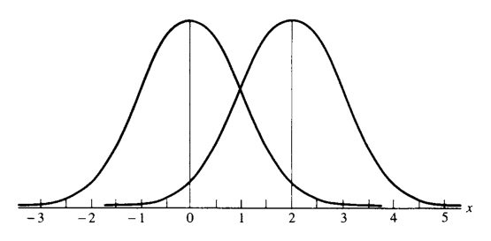
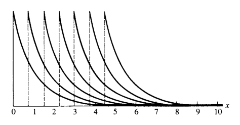
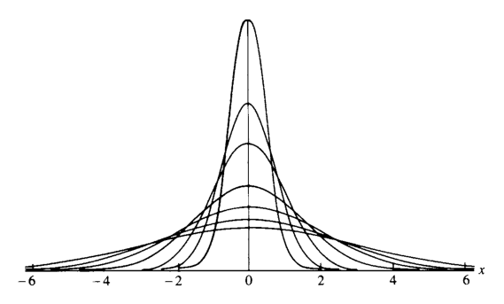
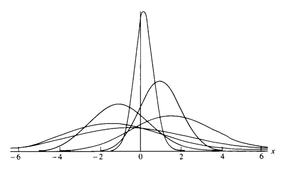

3 자주 쓰이는 분포족
“How do all these unusuals strike you, Watson?”
“Their cumulative effect is certainly considerable, and yet each of them is quite possible in itself.”
— Sherlock Holmes and Dr. Watson, The Adventure of the Abbey Grange
- 이 장은 통계학에서 자주 쓰이는 대표적인 분포족(family of distributions)을 정리한다.
- 통계분포는 모집단을 모형화하는 데 사용된다.
- 실제 통계분석에서는 하나의 고정된 분포보다, 하나 이상의 모수에 의해 색인화된 분포족을 다루는 경우가 많다.
- 예를 들어 어떤 모집단을 정규분포로 모형화할 수 있다고 생각하더라도 평균 \(\mu\)를 정확히 알지 못할 수 있다.
- 이 경우에는 하나의 정규분포가 아니라 평균 \(\mu\)를 모수로 갖는 정규분포족을 다룬다.
\[ -\infty<\mu<\infty \]
- 이 장에서 다루는 내용은 다음과 같다.
- 이산형 분포
- 연속형 분포
- 지수족
- 위치·척도 분포족
- 확률부등식과 항등식
- 관련 기타 주제
- 각 분포에 대해 가능한 한 다음을 함께 정리한다.
- 확률질량함수 또는 확률밀도함수
- 모수의 의미
- 평균과 분산
- 적률생성함수
- 대표적 사용 상황
- 다른 분포와의 관계
3.1 도입
- 통계분포는 모집단의 확률적 구조를 나타내는 모형이다.
- 분포족은 하나의 함수형태를 유지하면서 모수 값에 따라 모양, 위치, 퍼짐 등을 변화시킨다.
- 예를 들어 정규분포족은 평균과 분산에 따라 다른 분포를 만들지만, 기본적인 종 모양 구조는 유지한다.
- 이 장의 목적은 다음과 같다.
- 통계학에서 자주 등장하는 분포족들을 목록화한다.
- 각 분포의 평균, 분산, mgf, 특징을 정리한다.
- 분포들 사이의 유용한 관계를 보여준다.
- 이후 장에서 사용할 추론 이론의 기반을 마련한다.
3.2 이산형 분포
- 확률변수 \(X\)의 가능한 값들의 집합이 가산집합이면 \(X\)는 이산형 분포를 갖는다고 한다.
- 대부분의 이산형 확률변수는 정수값을 가진다.
3.2.1 이산균등분포
- 확률변수 \(X\)가 \(1,2,\ldots,N\) 중 하나의 값을 동일한 확률로 가진다면 이산균등분포를 따른다고 한다.
\[ P(X=x\mid N)=\frac{1}{N}, \qquad x=1,2,\ldots,N. \tag{3.2.1} \]
- 여기서 \(N\)은 주어진 양의 정수이다.
- 모든 결과가 같은 확률을 갖는다.
3.2.1.1 모수 표기법
- 이 책에서는 모수에 대한 의존성을 강조하기 위해 조건부 기호 \(|\)를 사용한다.
- 예를 들어
\[ P(X=x\mid N) \]
은 확률이 모수 \(N\)에 의존한다는 뜻이다. - 같은 표기법은 pmf, pdf, cdf, 기댓값 등에서도 사용된다. - 문맥상 혼동이 없으면 모수 표기를 생략하기도 한다.
3.2.1.2 평균과 분산
- 다음 합 공식들을 사용한다.
\[ \sum_{i=1}^{k}i=\frac{k(k+1)}{2}, \qquad \sum_{i=1}^{k}i^2=\frac{k(k+1)(2k+1)}{6}. \]
- 평균은
\[ EX = \sum_{x=1}^{N}xP(X=x\mid N) = \sum_{x=1}^{N}x\frac1N = \frac{N+1}{2}. \]
- 두 번째 모멘트는
\[ EX^2 = \sum_{x=1}^{N}x^2\frac1N = \frac{(N+1)(2N+1)}{6}. \]
- 따라서 분산은
\[ \begin{aligned} Var(X) &=EX^2-(EX)^2\\ &= \frac{(N+1)(2N+1)}{6} - \left(\frac{N+1}{2}\right)^2\\ &= \frac{(N+1)(N-1)}{12}. \end{aligned} \]
- 이산균등분포는 구간 \(N_0,N_0+1,\ldots,N_1\)으로도 일반화할 수 있다.
\[ P(X=x\mid N_0,N_1) = \frac{1}{N_1-N_0+1}. \]
3.2.2 초기하분포
- 초기하분포는 유한 모집단에서 비복원추출을 할 때 자연스럽게 등장한다.
- 대표적인 설명은 항아리 모형이다.
3.2.2.1 항아리 모형
- 항아리에 총 \(N\)개의 공이 있다고 하자.
- 이 중 \(M\)개는 빨간 공이고, \(N-M\)개는 초록 공이다.
- 여기서 \(K\)개의 공을 한 번에 무작위로 뽑는다.
- \(X\)를 표본 속 빨간 공의 개수라고 하자.
- 그러면 \(X\)는 초기하분포를 따른다.
\[ P(X=x\mid N,M,K) = \frac{ \binom{M}{x}\binom{N-M}{K-x} }{ \binom{N}{K} }, \qquad x=0,1,\ldots,K. \tag{3.2.2} \]
- 각 항의 의미는 다음과 같다.
- \(\binom{N}{K}\): 전체 \(N\)개 중 \(K\)개를 고르는 모든 방법 수
- \(\binom{M}{x}\): 빨간 공 \(M\)개 중 \(x\)개를 고르는 방법 수
- \(\binom{N-M}{K-x}\): 초록 공 \(N-M\)개 중 \(K-x\)개를 고르는 방법 수
3.2.2.2 가능한 \(x\)의 범위
- 이항계수 \(\binom{n}{r}\)는 보통 \(n\ge r\)일 때 정의된다.
- 따라서 \(x\)는 다음 조건을 만족해야 한다.
\[ M\ge x, \qquad N-M\ge K-x. \]
- 이를 정리하면
\[ M-(N-K)\le x\le M. \]
- 많은 경우 \(K\)가 \(M\)과 \(N\)에 비해 작으면 단순히 \(0\le x\le K\)를 사용해도 문제가 없다.
3.2.2.3 평균과 분산
- 초기하분포의 평균은
\[ EX=\frac{KM}{N}. \]
- 직관적으로는 표본 크기 \(K\)에 모집단의 빨간 공 비율 \(M/N\)을 곱한 값이다.
- 분산은
\[ Var(X) = \frac{KM}{N} \frac{(N-M)(N-K)}{N(N-1)}. \]
- 이 분산에는 비복원추출의 효과가 반영되어 있다.
- \(N-K\) 항은 표본을 많이 뽑을수록 남는 불확실성이 줄어든다는 것을 보여준다.
3.2.3 예제: 합격판정 표본추출
- 초기하분포는 품질관리의 acceptance sampling에 사용된다.
- 어떤 소매상이 부품을 lot 단위로 구매한다고 하자.
- 각 부품은 정상 또는 불량이다.
- 다음과 같이 둔다.
\[ N=\text{lot 안의 전체 부품 수}, \qquad M=\text{lot 안의 불량품 수}. \]
- lot 안의 부품이 25개이고 이 중 6개가 불량이라고 하자.
- 10개를 표본추출했을 때 불량품이 하나도 없을 확률은
\[ P(X=0) = \frac{\binom{6}{0}\binom{19}{10}}{\binom{25}{10}} = 0.028. \]
- 해석:
- 실제로 불량품이 6개라면 10개를 뽑아 모두 정상일 확률은 매우 작다.
- 관찰된 결과는 lot 안에 6개 이상의 불량품이 있다는 가설과 잘 맞지 않는다.
3.2.4 베르누이분포와 이항분포
- 이항분포는 가장 유용한 이산분포 중 하나이다.
- 이항분포의 기반은 베르누이 시행(Bernoulli trial)이다.
- 베르누이 시행은 가능한 결과가 오직 두 개인 실험이다.
- 성공
- 실패
3.2.4.1 베르누이분포
- 확률변수 \(X\)가 다음과 같으면 \(X\)는 Bernoulli\((p)\) 분포를 따른다.
\[ X= \begin{cases} 1, & \text{with probability }p,\\ 0, & \text{with probability }1-p. \end{cases} \tag{3.2.3} \]
여기서 \(0\le p\le1\)이다.
\(X=1\)은 성공, \(X=0\)은 실패라고 부른다.
\(p\)는 성공확률이다.
평균은
\[ EX=1\cdot p+0\cdot(1-p)=p. \]
- 분산은
\[ Var(X) = (1-p)^2p+(0-p)^2(1-p) = p(1-p). \]
3.2.4.2 이항분포의 유도
- 동일하고 독립인 베르누이 시행을 \(n\)번 반복한다고 하자.
- 각 시행의 성공확률은 \(p\)이다.
- \(Y\)를 \(n\)번 시행 중 성공 횟수라고 하자.
- 그러면 \(Y\)는 이항분포를 따른다.
\[ P(Y=y\mid n,p) = \binom{n}{y}p^y(1-p)^{n-y}, \qquad y=0,1,\ldots,n. \]
- 다른 표현으로는 \(X_1,\ldots,X_n\)이 iid Bernoulli\((p)\)일 때
\[ Y=\sum_{i=1}^{n}X_i \]
이면
\[ Y\sim Binomial(n,p). \]
3.2.4.3 이항정리
- 이항확률들의 합이 1임은 이항정리에서 바로 나온다.
\[ (x+y)^n = \sum_{i=0}^{n}\binom{n}{i}x^iy^{n-i}. \tag{3.2.4} \]
- \(x=p\), \(y=1-p\)를 대입하면
\[ 1 = [p+(1-p)]^n = \sum_{i=0}^{n} \binom{n}{i}p^i(1-p)^{n-i}. \]
3.2.4.4 이항분포의 평균, 분산, mgf
- \(X\sim Binomial(n,p)\)이면
\[ EX=np, \qquad Var(X)=np(1-p). \]
- mgf는
\[ M_X(t)=[pe^t+(1-p)]^n. \]
3.2.5 예제: 주사위 확률
- 공정한 주사위를 네 번 던져 적어도 한 번 6이 나올 확률을 구하자.
- 한 번의 시행에서 성공확률은
\[ p=P(\text{6이 나옴})=\frac16. \]
- \(X\)를 네 번 중 6이 나온 횟수라고 하면
\[ X\sim Binomial\left(4,\frac16\right). \]
- 따라서
\[ \begin{aligned} P(\text{적어도 한 번 6}) &=P(X>0)\\ &=1-P(X=0)\\ &= 1-\binom40\left(\frac16\right)^0\left(\frac56\right)^4\\ &= 1-\left(\frac56\right)^4\\ &=0.518. \end{aligned} \]
- 이제 주사위 두 개를 24번 던져 적어도 한 번 double 6이 나올 확률을 구하자.
- 한 번의 시행에서 double 6의 확률은
\[ p=\frac{1}{36}. \]
- \(Y\)를 24번 중 double 6의 횟수라고 하면
\[ Y\sim Binomial\left(24,\frac1{36}\right). \]
- 따라서
\[ P(Y>0) = 1-P(Y=0) = 1-\left(\frac{35}{36}\right)^{24} = 0.491. \]
- 두 확률은 비슷해 보이지만 같지 않다.
- 이 계산은 도박사 de Méré의 문제와 관련되어 있다.
3.2.6 포아송분포
- 포아송분포는 널리 쓰이는 이산분포이다.
- 주어진 시간 또는 공간 구간에서 발생하는 사건 수를 모형화할 때 사용된다.
- 예:
- 일정 시간 동안 은행에 도착하는 고객 수
- 일정 시간 동안 전화가 걸려오는 횟수
- 일정 지역에 떨어지는 폭탄 수
- 호수의 특정 구역에 있는 물고기 수
3.2.6.1 정의
- \(X\)가 음이 아닌 정수값을 가지며 다음 pmf를 가지면 \(X\)는 Poisson\((\lambda)\) 분포를 따른다.
\[ P(X=x\mid\lambda) = \frac{e^{-\lambda}\lambda^x}{x!}, \qquad x=0,1,2,\ldots. \tag{3.2.5} \]
- \(\lambda>0\)는 강도(intensity) 모수라고도 부른다.
3.2.6.2 전체확률이 1임의 확인
- 지수함수의 테일러 전개는
\[ e^y=\sum_{i=0}^{\infty}\frac{y^i}{i!} \]
이다.
- 따라서
\[ \sum_{x=0}^{\infty}P(X=x\mid\lambda) = e^{-\lambda} \sum_{x=0}^{\infty}\frac{\lambda^x}{x!} = e^{-\lambda}e^\lambda = 1. \]
3.2.6.3 평균, 분산, mgf
- 평균은
\[ \begin{aligned} EX &= \sum_{x=0}^{\infty} x\frac{e^{-\lambda}\lambda^x}{x!}\\ &= \lambda e^{-\lambda} \sum_{y=0}^{\infty}\frac{\lambda^y}{y!}\\ &=\lambda. \end{aligned} \]
- 분산도
\[ Var(X)=\lambda \]
이다.
- mgf는
\[ M_X(t)=e^{\lambda(e^t-1)}. \]
- 포아송분포에서는 평균과 분산이 모두 \(\lambda\)이다.
3.2.7 예제: 대기시간과 전화교환원
- 한 전화교환원이 평균적으로 3분에 5통의 전화를 처리한다고 하자.
- 1분당 평균 전화 수는
\[ \lambda=\frac53. \]
- \(X\)를 다음 1분 동안 걸려오는 전화 수라고 하면
\[ X\sim Poisson\left(\frac53\right). \]
- 다음 1분 동안 전화가 한 통도 없을 확률은
\[ P(X=0) = e^{-5/3} = 0.189. \]
- 적어도 두 통 이상 걸려올 확률은
\[ \begin{aligned} P(X\ge2) &= 1-P(X=0)-P(X=1)\\ &= 1-0.189-e^{-5/3}\frac{5/3}{1!}\\ &=0.496. \end{aligned} \]
3.2.7.1 포아송 확률의 재귀관계
- 포아송 확률은 다음 재귀식으로 빠르게 계산할 수 있다.
\[ P(X=x) = \frac{\lambda}{x}P(X=x-1), \qquad x=1,2,\ldots. \tag{3.2.6} \]
- 이항분포에도 유사한 재귀관계가 있다.
\[ P(Y=y) = \frac{n-y+1}{y} \frac{p}{1-p} P(Y=y-1). \tag{3.2.7} \]
3.2.7.2 포아송 근사
- 이항분포에서 \(n\)이 크고 \(p\)가 작으며 \(\lambda=np\)가 일정하면 이항분포는 포아송분포로 근사된다.
- 재귀식 관점에서 보면
\[ \frac{n-y+1}{y}\frac{p}{1-p} = \frac{np-p(y-1)}{y-py} \approx \frac{\lambda}{y}. \]
- 따라서 이항분포의 재귀식은 포아송분포의 재귀식과 거의 같아진다.
- 또한
\[ P(Y=0)=(1-p)^n = \left(1-\frac{\lambda}{n}\right)^n \approx e^{-\lambda}. \]
3.2.8 예제: 포아송 근사
- 식자공이 평균적으로 500단어당 1개의 오류를 낸다고 하자.
- 한 페이지는 300단어이고, 다섯 페이지는 1500단어이다.
- 각 단어에서 오류가 날 확률을 \(p=1/500\)으로 보면
\[ X\sim Binomial\left(1500,\frac1{500}\right). \]
- 두 개 이하의 오류가 날 확률은 정확히 계산하면
\[ P(X\le2) = \sum_{x=0}^{2} \binom{1500}{x} \left(\frac1{500}\right)^x \left(\frac{499}{500}\right)^{1500-x} = 0.4230. \]
- 포아송 근사에서는
\[ \lambda=1500\left(\frac1{500}\right)=3. \]
- 따라서
\[ P(X\le2) \approx e^{-3}\left(1+3+\frac{3^2}{2}\right) = 0.4232. \]
- 근사값이 매우 정확하다.
3.2.9 음이항분포
- 이항분포는 고정된 시행 횟수 안에서 성공 횟수를 센다.
- 반대로 음이항분포는 고정된 성공 횟수에 도달하기까지 필요한 시행 횟수 또는 실패 횟수를 센다.
3.2.9.1 \(r\)번째 성공이 나오는 시행 번호
- 독립 Bernoulli\((p)\) 시행열에서 \(X\)를 \(r\)번째 성공이 발생하는 시행 번호라고 하자.
- 그러면
\[ P(X=x\mid r,p) = \binom{x-1}{r-1} p^r(1-p)^{x-r}, \qquad x=r,r+1,\ldots. \tag{3.2.9} \]
- 이유:
- 처음 \(x-1\)번 시행에서 성공이 정확히 \(r-1\)번 있어야 한다.
- \(x\)번째 시행은 성공이어야 한다.
3.2.9.2 \(r\)번째 성공 전 실패 횟수
- 음이항분포는 종종 \(Y=\) \(r\)번째 성공 전 실패 횟수로 정의된다.
- 이때 \(Y=X-r\)이고,
\[ P(Y=y) = \binom{r+y-1}{y} p^r(1-p)^y, \qquad y=0,1,\ldots. \tag{3.2.10} \]
- 이 책에서 특별한 언급이 없으면 negative binomial\((r,p)\)는 위 pmf를 사용한다.
3.2.9.3 평균과 분산
- \(Y\)가 식 (3.2.10)의 음이항분포를 따르면
\[ EY=\frac{r(1-p)}{p}, \qquad Var(Y)=\frac{r(1-p)}{p^2}. \]
- 평균을 \(\mu\)로 재매개화하면
\[ \mu=\frac{r(1-p)}{p}. \]
- 그러면 분산은
\[ Var(Y)=\mu+\frac{1}{r}\mu^2. \]
- 즉, 분산은 평균의 이차함수이다.
- 이 성질은 자료분석에서 과산포(overdispersion)를 다룰 때 유용하다.
3.2.9.4 포아송분포와의 관계
- \(r\to\infty\), \(p\to1\)이면서
\[ r(1-p)\to\lambda \]
이면 음이항분포는 Poisson\((\lambda)\)로 수렴한다. - 이때 평균과 분산도 모두 \(\lambda\)로 수렴한다.
3.2.10 예제: 역이항표본추출
- 생물학적 모집단에서 특정 특징을 가진 개체를 찾을 때 음이항분포가 사용된다.
- 예를 들어 초파리 모집단에서 vestigial wings를 가진 초파리를 100마리 찾을 때까지 표본추출한다고 하자.
- 해당 특징을 가질 확률을 \(p\)라 하면, 필요한 표본 수는 음이항분포를 따른다.
- 적어도 \(N\)마리를 조사해야 할 확률은
\[ P(X\ge N) = \sum_{x=N}^{\infty} \binom{x-1}{99} p^{100}(1-p)^{x-100}. \]
- 또는
\[ P(X\ge N) = 1- \sum_{x=100}^{N-1} \binom{x-1}{99} p^{100}(1-p)^{x-100}. \]
3.2.11 기하분포
- 기하분포는 가장 단순한 대기시간 분포이다.
- 음이항분포에서 \(r=1\)인 특수한 경우이다.
\[ P(X=x\mid p)=p(1-p)^{x-1}, \qquad x=1,2,\ldots. \]
- \(X\)는 첫 번째 성공이 나오는 시행 번호로 해석된다.
- 즉, 성공이 나올 때까지 기다리는 시간이다.
3.2.11.1 평균과 분산
- 음이항분포 공식에서 \(r=1\)을 사용하면
\[ EX=\frac1p, \qquad Var(X)=\frac{1-p}{p^2}. \]
3.2.11.2 무기억성
- 기하분포의 중요한 성질은 무기억성이다.
- 정수 \(s>t\)에 대해
\[ P(X>s\mid X>t)=P(X>s-t). \tag{3.2.11} \]
- 먼저
\[ P(X>n)=P(\text{처음 }n\text{번 시행에서 성공 없음})=(1-p)^n. \tag{3.2.12} \]
- 따라서
\[ \begin{aligned} P(X>s\mid X>t) &= \frac{P(X>s)}{P(X>t)}\\ &= \frac{(1-p)^s}{(1-p)^t}\\ &=(1-p)^{s-t}\\ &=P(X>s-t). \end{aligned} \]
- 해석:
- 이미 \(t\)번 실패했다는 사실은 이후 추가로 얼마나 더 기다려야 하는지에 영향을 주지 않는다.
- 기하분포는 시간이 지나도 실패확률이 증가하지 않는 상황에 적합하다.
3.2.12 예제: 고장시간
- 전구가 하루에 고장날 확률이 0.001이라고 하자.
- 전구가 적어도 30일 이상 지속될 확률은
\[ P(X>30) = (0.999)^{30} = 0.970. \]
3.3 연속형 분포
- 이 절은 통계학에서 자주 사용되는 대표적인 연속분포들을 정리한다.
- 1장에서 본 것처럼, 비음수이고 적분 가능한 함수는 적절히 정규화하여 pdf로 만들 수 있다.
- 따라서 여기서 다루는 분포들이 모든 연속분포를 포괄하는 것은 아니다.
3.3.1 연속균등분포
- 구간 \([a,b]\) 위에 확률질량이 균일하게 퍼진 분포이다.
\[ f(x\mid a,b) = \begin{cases} \dfrac{1}{b-a}, & x\in[a,b],\\ 0, & \text{otherwise}. \end{cases} \tag{3.3.1} \]
- 평균은
\[ EX = \int_a^b\frac{x}{b-a}\,dx = \frac{a+b}{2}. \]
- 분산은
\[ Var(X) = \int_a^b \left(x-\frac{a+b}{2}\right)^2 \frac{1}{b-a}\,dx = \frac{(b-a)^2}{12}. \]
3.3.2 감마분포
- 감마분포는 \([0,\infty)\) 위의 유연한 연속분포족이다.
- 먼저 감마함수를 정의한다.
\[ \Gamma(\alpha) = \int_0^\infty t^{\alpha-1}e^{-t}\,dt, \qquad \alpha>0. \tag{3.3.2} \]
3.3.2.1 감마함수의 기본 성질
- 적분 by parts를 이용하면
\[ \Gamma(\alpha+1)=\alpha\Gamma(\alpha), \qquad \alpha>0. \tag{3.3.3} \]
- 또한
\[ \Gamma(1)=1. \]
- 따라서 양의 정수 \(n\)에 대해
\[ \Gamma(n)=(n-1)!. \tag{3.3.4} \]
- 또 중요한 특수값은
\[ \Gamma\left(\frac12\right)=\sqrt\pi. \tag{3.3.15} \]
3.3.2.2 감마 pdf
- 먼저 다음 함수는 pdf이다.
\[ f(t)=\frac{t^{\alpha-1}e^{-t}}{\Gamma(\alpha)}, \qquad 0<t<\infty. \tag{3.3.5} \]
- 척도 모수 \(\beta>0\)를 도입하면 감마분포족은 다음과 같다.
\[ f(x\mid\alpha,\beta) = \frac{1}{\Gamma(\alpha)\beta^\alpha} x^{\alpha-1}e^{-x/\beta}, \qquad 0<x<\infty. \tag{3.3.6} \]
- 여기서
- \(\alpha\)는 shape parameter이다.
- \(\beta\)는 scale parameter이다.
3.3.2.3 평균과 분산
- 평균은
\[ EX=\alpha\beta. \]
- 계산 핵심은 적분 안의 항을 gamma\((\alpha+1,\beta)\)의 kernel로 인식하는 것이다.
\[ \int_0^\infty x^{\alpha-1}e^{-x/\beta}\,dx = \Gamma(\alpha)\beta^\alpha. \tag{3.3.8} \]
- 분산은
\[ Var(X)=\alpha\beta^2. \]
- mgf는
\[ M_X(t)= \left(\frac{1}{1-\beta t}\right)^\alpha, \qquad t<\frac1\beta. \]
3.3.3 예제: 감마-포아송 관계
- \(X\sim Gamma(\alpha,\beta)\)이고 \(\alpha\)가 정수라고 하자.
- 그러면
\[ P(X\le x)=P(Y\ge\alpha), \tag{3.3.9} \]
여기서
\[ Y\sim Poisson\left(\frac{x}{\beta}\right). \]
- 이 관계는 감마 cdf 계산과 포아송 꼬리확률 계산을 연결한다.
- 반복적인 부분적분으로 증명할 수 있다.
- 감마분포와 포아송분포가 대기시간과 사건 수라는 관점에서 연결되어 있음을 보여준다.
3.3.4 카이제곱분포
- 감마분포에서
\[ \alpha=\frac{p}{2}, \qquad \beta=2 \]
로 두면 자유도 \(p\)인 카이제곱분포가 된다.
\[ f(x\mid p) = \frac{1}{\Gamma(p/2)2^{p/2}} x^{p/2-1}e^{-x/2}, \qquad 0<x<\infty. \tag{3.3.10} \]
- 카이제곱분포는 정규분포 표본에서 매우 중요하다.
- 평균과 분산은 감마분포 공식에서 바로 얻는다.
\[ EX=p, \qquad Var(X)=2p. \]
3.3.5 지수분포
- 감마분포에서 \(\alpha=1\)로 두면 지수분포가 된다.
\[ f(x\mid\beta) = \frac1\beta e^{-x/\beta}, \qquad 0<x<\infty. \tag{3.3.11} \]
- 평균과 분산은
\[ EX=\beta, \qquad Var(X)=\beta^2. \]
3.3.5.1 지수분포의 무기억성
- \(X\sim Exponential(\beta)\)이면 \(s>t\ge0\)에 대해
\[ P(X>s\mid X>t)=P(X>s-t). \]
- 증명:
\[ \begin{aligned} P(X>s\mid X>t) &= \frac{P(X>s)}{P(X>t)}\\ &= \frac{e^{-s/\beta}}{e^{-t/\beta}}\\ &= e^{-(s-t)/\beta}\\ &= P(X>s-t). \end{aligned} \]
- 지수분포는 기하분포의 연속형 대응물처럼 볼 수 있다.
3.3.6 와이블분포
- \(X\sim Exponential(\beta)\)이고
\[ Y=X^{1/\gamma} \]
라 하면 \(Y\)는 Weibull\((\gamma,\beta)\) 분포를 따른다.
\[ f_Y(y\mid\gamma,\beta) = \frac{\gamma}{\beta} y^{\gamma-1}e^{-y^\gamma/\beta}, \qquad 0<y<\infty. \tag{3.3.12} \]
- \(\gamma=1\)이면 지수분포가 된다.
- 와이블분포는 고장시간 자료와 생존자료 분석에서 매우 중요하다.
- 특히 hazard function 모형화에 유용하다.
3.3.7 정규분포
- 정규분포 또는 가우스분포는 통계학에서 중심적인 역할을 한다.
- 중요한 이유는 다음과 같다.
- 해석적으로 다루기 좋다.
- 대칭적인 종 모양을 가진다.
- 중심극한정리에 의해 많은 분포의 근사분포로 등장한다.
3.3.7.1 pdf
- 평균 \(\mu\), 분산 \(\sigma^2\)를 갖는 정규분포의 pdf는
\[ f(x\mid\mu,\sigma^2) = \frac{1}{\sqrt{2\pi}\sigma} e^{-(x-\mu)^2/(2\sigma^2)}, \qquad -\infty<x<\infty. \tag{3.3.13} \]
- 보통
\[ X\sim N(\mu,\sigma^2) \]
로 쓴다.
3.3.7.2 표준화
- \(X\sim N(\mu,\sigma^2)\)이면
\[ Z=\frac{X-\mu}{\sigma} \]
는 표준정규분포를 따른다.
\[ Z\sim N(0,1). \]
- 따라서 모든 정규분포 확률은 표준정규분포 확률로 바꾸어 계산할 수 있다.
3.3.7.3 평균과 분산
- \(Z\sim N(0,1)\)이면
\[ EZ=0, \qquad Var(Z)=1. \]
- \(X=\mu+\sigma Z\)이므로
\[ EX=\mu, \qquad Var(X)=\sigma^2. \]
3.3.7.4 정규 pdf의 적분
- 표준정규 pdf가 실제로 1로 적분됨을 보이려면 다음을 증명하면 된다.
\[ \frac{1}{\sqrt{2\pi}} \int_{-\infty}^{\infty}e^{-z^2/2}\,dz = 1. \]
- 대칭성을 이용하면
\[ \int_0^\infty e^{-z^2/2}\,dz = \sqrt{\frac{\pi}{2}}. \tag{3.3.14} \]
- 이 적분은 극좌표 변환을 이용해 계산한다.
- 또한 감마함수의 특수값
\[ \Gamma\left(\frac12\right)=\sqrt\pi \]
와 연결된다.
3.3.7.5 정규분포의 형태
- 정규 pdf는 \(x=\mu\)에서 최대값을 가진다.
- 변곡점은
\[ \mu-\sigma, \qquad \mu+\sigma \]
에 있다.
- 평균으로부터 표준편차 단위의 확률은 다음과 같다.
\[ P(|X-\mu|\le\sigma)=0.6826, \]
\[ P(|X-\mu|\le2\sigma)=0.9544, \]
\[ P(|X-\mu|\le3\sigma)=0.9974. \]

3.3.8 정규근사
- 이항분포는 조건이 적절할 때 정규분포로 근사할 수 있다.
- \(X\sim Binomial(n,p)\)이면
\[ EX=np, \qquad Var(X)=np(1-p). \]
- 따라서 근사 정규분포는
\[ Y\sim N(np,\;np(1-p)). \]
- 보수적 기준으로
\[ \min(np,n(1-p))\ge5 \]
이면 근사가 괜찮다고 본다.
3.3.9 예제: 정규근사와 연속성 보정
- \(X\sim Binomial(25,0.6)\)라고 하자.
- 평균과 표준편차는
\[ \mu=25(0.6)=15, \qquad \sigma=\sqrt{25(0.6)(0.4)}=2.45. \]
- 보정 없이 계산하면
\[ P(X\le13) \approx P(Y\le13) = P\left(Z\le\frac{13-15}{2.45}\right) = P(Z\le-0.82) = 0.206. \]
- 정확한 이항계산은
\[ P(X\le13) = \sum_{x=0}^{13} \binom{25}{x}(0.6)^x(0.4)^{25-x} = 0.267. \]
- 차이가 꽤 크다.
- 이산분포를 연속분포로 근사할 때는 연속성 보정(continuity correction)을 사용하면 개선된다.
- \(P(X\le13)\) 대신 같은 사건을 연속적으로
\[ P(X\le13.5) \]
로 근사한다.
\[ P(X\le13) \approx P(Y\le13.5) = P(Z\le-0.61) = 0.271. \]
- 정확값 0.267에 훨씬 가까워진다.

- 일반적으로
\[ P(X\le x)\approx P(Y\le x+1/2), \]
\[ P(X\ge x)\approx P(Y\ge x-1/2). \]
3.3.10 베타분포
- 베타분포는 \((0,1)\) 위의 연속분포족이다.
- 두 모수 \(\alpha,\beta\)를 가진다.
\[ f(x\mid\alpha,\beta) = \frac{1}{B(\alpha,\beta)} x^{\alpha-1}(1-x)^{\beta-1}, \qquad 0<x<1. \tag{3.3.16} \]
- 베타함수는
\[ B(\alpha,\beta) = \int_0^1 x^{\alpha-1}(1-x)^{\beta-1}\,dx. \]
- 베타함수와 감마함수의 관계는
\[ B(\alpha,\beta) = \frac{\Gamma(\alpha)\Gamma(\beta)} {\Gamma(\alpha+\beta)}. \tag{3.3.17} \]
- 베타분포는 확률, 비율, proportion처럼 0과 1 사이의 값을 모형화하는 데 자주 쓰인다.
3.3.10.1 모멘트
- \(n>-\alpha\)에 대해
\[ EX^n = \frac{B(\alpha+n,\beta)}{B(\alpha,\beta)} = \frac{\Gamma(\alpha+n)\Gamma(\alpha+\beta)} {\Gamma(\alpha+\beta+n)\Gamma(\alpha)}. \tag{3.3.18} \]
- 평균과 분산은
\[ EX= \frac{\alpha}{\alpha+\beta}, \]
\[ Var(X) = \frac{\alpha\beta} {(\alpha+\beta)^2(\alpha+\beta+1)}. \]
3.3.10.2 베타분포의 모양
- 베타분포는 모수에 따라 매우 다양한 모양을 가진다.
- \(\alpha>1,\beta=1\): 증가형
- \(\alpha=1,\beta>1\): 감소형
- \(\alpha<1,\beta<1\): U자형
- \(\alpha>1,\beta>1\): 단봉형
- \(\alpha=\beta\): \(1/2\)를 중심으로 대칭
- \(\alpha=\beta=1\): uniform\((0,1)\)


3.3.11 코시분포
- 코시분포는 \((-\infty,\infty)\) 위의 대칭적이고 종 모양인 분포이다.
\[ f(x\mid\theta) = \frac1\pi \frac{1}{1+(x-\theta)^2}, \qquad -\infty<x<\infty. \tag{3.3.19} \]
- 정규분포와 비슷해 보이지만 성질은 매우 다르다.
- 코시분포는 평균이 존재하지 않는다.
\[ E|X| = \int_{-\infty}^{\infty} \frac1\pi \frac{|x|}{1+(x-\theta)^2} \,dx = \infty. \tag{3.3.20} \]
- 따라서 어떤 절대모멘트도 유한하지 않다.
- mgf도 존재하지 않는다.
3.3.11.1 pdf임의 확인
- 다음 도함수를 이용한다.
\[ \frac{d}{dt}\arctan(t)=\frac{1}{1+t^2}. \]
- 따라서
\[ \int_{-\infty}^{\infty} \frac1\pi \frac{1}{1+(x-\theta)^2} \,dx = \frac1\pi \arctan(x-\theta)\Big|_{-\infty}^{\infty} = 1. \]
3.3.11.2 모수의 의미
- \(\theta\)는 평균이 아니라 중앙값이다.
- \(X\)가 Cauchy\((\theta)\)를 따르면
\[ P(X\ge\theta)=P(X\le\theta)=\frac12. \]
- 코시분포는 꼬리가 매우 두껍다.
- 두 독립 표준정규확률변수의 비율은 코시분포를 따른다.

3.3.12 로그정규분포
- 확률변수 \(X\)의 로그가 정규분포를 따르면 \(X\)는 로그정규분포를 따른다.
\[ \log X\sim N(\mu,\sigma^2). \]
- 그러면 \(X\)의 pdf는
\[ f(x\mid\mu,\sigma^2) = \frac{1}{\sqrt{2\pi}\sigma} \frac1x e^{-(\log x-\mu)^2/(2\sigma^2)}, \qquad 0<x<\infty. \tag{3.3.21} \]
- 평균은 정규분포의 mgf를 이용해 계산할 수 있다.
\[ EX = E[e^{\log X}] = E[e^Y], \qquad Y=\log X\sim N(\mu,\sigma^2). \]
- 따라서
\[ EX=e^{\mu+\sigma^2/2}. \]
- 분산은
\[ Var(X) = e^{2(\mu+\sigma^2)} - e^{2\mu+\sigma^2}. \]
- 로그정규분포는 오른쪽으로 치우친 자료를 모형화할 때 자주 쓰인다.
- 예:
- 소득
- 생물학적 크기
- 양의 값을 가지며 오른쪽 꼬리가 긴 변수

3.3.13 이중지수분포
- 이중지수분포는 지수분포를 평균 주변으로 반사하여 만든 대칭분포이다.
- Laplace distribution이라고도 한다.
\[ f(x\mid\mu,\sigma) = \frac{1}{2\sigma} e^{-|x-\mu|/\sigma}, \qquad -\infty<x<\infty. \tag{3.3.22} \]
- 평균과 분산은
\[ EX=\mu, \qquad Var(X)=2\sigma^2. \]
- 정규분포보다 꼬리가 두껍지만 모든 모멘트는 존재한다.
- \(x=\mu\)에서 뾰족한 peak가 있으며 미분가능하지 않다.
- 절댓값이 포함된 적분은 보통 \(\mu\)를 기준으로 구간을 나누어 계산한다.
\[ EX = \int_{-\infty}^{\mu} \frac{x}{2\sigma}e^{(x-\mu)/\sigma}\,dx + \int_{\mu}^{\infty} \frac{x}{2\sigma}e^{-(x-\mu)/\sigma}\,dx. \tag{3.3.23} \]
3.4 지수족
- pdf 또는 pmf의 한 분포족이 다음 형태로 쓸 수 있으면 지수족이라고 한다.
\[ f(x\mid\theta) = h(x)c(\theta) \exp\left\{ \sum_{i=1}^{k}w_i(\theta)t_i(x) \right\}. \tag{3.4.1} \]
- 여기서
- \(h(x)\ge0\)와 \(t_i(x)\)는 관측값 \(x\)의 함수이다.
- \(c(\theta)\ge0\)와 \(w_i(\theta)\)는 모수 \(\theta\)의 함수이다.
- \(t_i(x)\)는 \(\theta\)에 의존하면 안 된다.
- \(w_i(\theta)\)는 \(x\)에 의존하면 안 된다.
- 많은 대표 분포가 지수족에 속한다.
- 정규분포
- 감마분포
- 베타분포
- 이항분포
- 포아송분포
- 음이항분포
3.4.1 예제: 이항분포는 지수족이다
- \(X\sim Binomial(n,p)\)이고 \(0<p<1\)이라 하자.
\[ f(x\mid p)= \binom{n}{x}p^x(1-p)^{n-x}. \]
- 이를 다시 쓰면
\[ \begin{aligned} f(x\mid p) &= \binom{n}{x}(1-p)^n \left(\frac{p}{1-p}\right)^x\\ &= \binom{n}{x}(1-p)^n \exp\left[ x\log\left(\frac{p}{1-p}\right) \right]. \end{aligned} \tag{3.4.2} \]
- 따라서 다음처럼 둘 수 있다.
\[ h(x)= \begin{cases} \binom{n}{x}, & x=0,\ldots,n,\\ 0, & \text{otherwise}, \end{cases} \]
\[ c(p)=(1-p)^n, \]
\[ w_1(p)=\log\left(\frac{p}{1-p}\right), \qquad t_1(x)=x. \]
- 그러면
\[ f(x\mid p) = h(x)c(p)\exp[w_1(p)t_1(x)]. \tag{3.4.3} \]
- 이것은 \(k=1\)인 지수족이다.
- 단, \(p=0\) 또는 \(p=1\)에서는 지지집합이 달라지므로 여기서는 제외한다.
3.4.2 정리: 지수족에서 모멘트 계산
- \(X\)의 pdf 또는 pmf가 식 (3.4.1)의 형태라고 하자.
- 그러면 다음 항등식이 성립한다.
\[ E\left[ \sum_{i=1}^{k} \frac{\partial w_i(\theta)}{\partial\theta_j} t_i(X) \right] = - \frac{\partial}{\partial\theta_j} \log c(\theta). \tag{3.4.4} \]
- 또한
\[ Var\left[ \sum_{i=1}^{k} \frac{\partial w_i(\theta)}{\partial\theta_j} t_i(X) \right] = - \frac{\partial^2}{\partial\theta_j^2} \log c(\theta) - E\left[ \sum_{i=1}^{k} \frac{\partial^2 w_i(\theta)}{\partial\theta_j^2} t_i(X) \right]. \tag{3.4.5} \]
- 이 공식의 장점은 적분이나 합 대신 미분으로 평균과 분산을 계산할 수 있다는 점이다.
3.4.3 예제: 이항분포의 평균과 분산
- 예제에서
\[ w_1(p)=\log\left(\frac{p}{1-p}\right), \qquad c(p)=(1-p)^n. \]
- 따라서
\[ \frac{d}{dp}w_1(p)=\frac{1}{p(1-p)}. \]
- 또한
\[ \frac{d}{dp}\log c(p) = \frac{d}{dp}n\log(1-p) = -\frac{n}{1-p}. \]
- 정리를 적용하면
\[ E\left[\frac{X}{p(1-p)}\right] = \frac{n}{1-p}. \]
- 따라서
\[ EX=np. \]
3.4.4 예제: 정규분포는 지수족이다
- 정규분포의 pdf는
\[ f(x\mid\mu,\sigma^2) = \frac{1}{\sqrt{2\pi}\sigma} \exp\left[ -\frac{(x-\mu)^2}{2\sigma^2} \right]. \tag{3.4.6} \]
- 이를 전개하면
\[ f(x\mid\mu,\sigma^2) = \frac{1}{\sqrt{2\pi}\sigma} \exp\left[-\frac{\mu^2}{2\sigma^2}\right] \exp\left[ -\frac{x^2}{2\sigma^2} + \frac{\mu x}{\sigma^2} \right]. \]
- 따라서
\[ h(x)=1, \]
\[ c(\mu,\sigma)= \frac{1}{\sqrt{2\pi}\sigma} \exp\left[-\frac{\mu^2}{2\sigma^2}\right], \]
\[ w_1(\mu,\sigma)=\frac{1}{\sigma^2}, \qquad t_1(x)=-\frac{x^2}{2}, \]
\[ w_2(\mu,\sigma)=\frac{\mu}{\sigma^2}, \qquad t_2(x)=x. \]
- 따라서 정규분포족은 \(k=2\)인 지수족이다.
3.4.5 지시함수
- 지수족을 다룰 때 지지집합이 모수에 의존하지 않는지가 중요하다.
- 지시함수는 다음과 같이 정의한다.
\[ I_A(x)= \begin{cases} 1, & x\in A,\\ 0, & x\notin A. \end{cases} \]
- 또는 \(I(x\in A)\)라고 쓴다.
- 지지집합이 \(x\)에만 의존하면 \(h(x)\)에 포함할 수 있다.
- 그러나 지지집합이 \(\theta\)에 의존하면 보통 지수족으로 보기 어렵다.
3.4.6 자연매개화와 자연모수공간
- 지수족은 종종 다음 형태로 재매개화된다.
\[ f(x\mid\eta) = h(x)c^*(\eta) \exp\left\{ \sum_{i=1}^{k}\eta_i t_i(x) \right\}. \tag{3.4.7} \]
- 여기서 \(\eta=(\eta_1,\ldots,\eta_k)\)를 자연모수라고 한다.
- 자연모수공간은 적분 또는 합이 유한하게 되는 모든 \(\eta\)의 집합이다.
- 자연모수공간은 많은 수학적 성질을 가지며, 특히 볼록집합이다.
3.4.7 예제: 정규분포의 자연모수공간
- 정규분포에서 자연모수로
\[ \eta_1=\frac1{\sigma^2}, \qquad \eta_2=\frac{\mu}{\sigma^2} \]
를 사용할 수 있다.
- 자연모수 표현은
\[ f(x\mid\eta_1,\eta_2) = \frac{\sqrt{\eta_1}}{\sqrt{2\pi}} \exp\left[-\frac{\eta_2^2}{2\eta_1}\right] \exp\left[-\frac{\eta_1x^2}{2}+\eta_2x\right]. \tag{3.4.8} \]
- 적분이 유한하려면 \(x^2\)의 계수가 음수여야 한다.
- 따라서
\[ \eta_1>0, \qquad -\infty<\eta_2<\infty. \]
- 자연모수는 수학적으로 편리하지만 평균과 분산처럼 직관적 해석이 항상 쉽지는 않다.
3.4.8 곡선 지수족
- 지수족에서 모수벡터의 차원이 \(k\)와 같으면 full exponential family라고 한다.
- 모수벡터의 차원이 \(d<k\)이면 curved exponential family라고 한다.
3.4.8.1 정의
- 식 (3.4.1)의 형태를 가지면서 모수벡터 \(\theta\)의 차원이 \(d<k\)인 경우 곡선 지수족이라고 한다.
- \(d=k\)이면 full exponential family이다.
3.4.9 예제: 곡선 지수족
- 정규분포족은 원래 full exponential family이다.
- 그러나
\[ \sigma^2=\mu^2 \]
라는 제약을 두면 모수는 \(\mu\) 하나만 남는다. - pdf는
\[ f(x\mid\mu) = \frac{1}{\sqrt{2\pi\mu^2}} \exp\left[ -\frac{(x-\mu)^2}{2\mu^2} \right]. \tag{3.4.9} \]
- 이 경우 full parameter space는 \((\mu,\sigma^2)\) 평면이지만, 제약된 모수공간은 포물선
\[ (\mu,\sigma^2)=(\mu,\mu^2) \]
이다. - 따라서 곡선 지수족이다.
3.4.10 예제: 정규근사와 곡선 지수족
- \(X_1,\ldots,X_n\)이 Poisson\((\lambda)\) 표본이면 중심극한정리에 의해
\[ \bar X\approx N\left(\lambda,\frac{\lambda}{n}\right). \]
- 평균과 분산이 모두 \(\lambda\)에 의해 결정되므로 이는 곡선 정규 지수족이다.
- Bernoulli\((p)\) 표본에 대해서도
\[ \bar X\approx N\left(p,\frac{p(1-p)}{n}\right) \]
가 되어 곡선 지수족 구조가 나타난다.
3.5 위치 및 척도 분포족
- 이 절은 분포족을 만드는 세 가지 방법을 다룬다.
- 위치분포족
- 척도분포족
- 위치-척도분포족
- 기본 아이디어는 하나의 표준 pdf \(f(x)\)를 정한 뒤, 이를 이동하거나 늘이거나 줄여서 새로운 분포족을 만드는 것이다.
3.5.1 정리
- \(f(x)\)가 임의의 pdf이고 \(\mu\)가 실수, \(\sigma>0\)이면
\[ g(x\mid\mu,\sigma) = \frac1\sigma f\left(\frac{x-\mu}{\sigma}\right) \]
도 pdf이다.
- 비음수성은 \(f(x)\ge0\)에서 바로 나온다.
- 적분값은 변수변환
\[ y=\frac{x-\mu}{\sigma} \]
를 통해 1임을 확인할 수 있다.
3.5.2 위치분포족
3.5.2.1 정의
- \(f(x)\)가 pdf일 때
\[ f(x-\mu), \qquad -\infty<\mu<\infty \]
로 주어지는 분포족을 위치분포족이라고 한다. - \(\mu\)를 위치모수라고 부른다. - \(\mu\)는 그래프의 모양을 바꾸지 않고 좌우로 이동시킨다.

3.5.2.2 위치분포족의 해석
- \(X\)가 pdf \(f(x-\mu)\)를 가지면
\[ X=Z+\mu \]
로 표현할 수 있다. - 여기서 \(Z\)는 표준 pdf \(f(z)\)를 갖는 확률변수이다. - 예: - 물리적 상수 \(\mu\)를 측정하되 관측오차 \(Z\)가 더해지는 경우 - 어떤 처치 전 반응시간 \(Z\)에 처치효과 \(\mu\)가 더해지는 경우
3.5.3 예제: 지수 위치분포족
- 표준 pdf를
\[ f(x)=e^{-x}, \qquad x\ge0 \]
로 두자. - 위치모수 \(\mu\)를 도입하면
\[ f(x\mid\mu) = \begin{cases} e^{-(x-\mu)}, & x\ge\mu,\\ 0, & x<\mu. \end{cases} \]
- \(\mu\)는 지지집합의 하한을 결정한다.
- 이런 경우 \(\mu\)를 threshold parameter라고 부르기도 한다.

3.5.4 척도분포족
3.5.4.1 정의
- \(f(x)\)가 pdf일 때
\[ \frac1\sigma f\left(\frac{x}{\sigma}\right), \qquad \sigma>0 \]
로 주어지는 분포족을 척도분포족이라고 한다. - \(\sigma\)는 척도모수이다. - \(\sigma>1\)이면 그래프가 늘어나고, \(\sigma<1\)이면 그래프가 수축된다.

- 감마분포에서 \(\alpha\)를 고정하고 \(\beta\)만 변화시키면 척도분포족이다.
- 정규분포에서 \(\mu=0\)으로 고정하고 \(\sigma\)를 변화시키면 척도분포족이다.
- 지수분포와 이중지수분포의 일부도 척도분포족으로 볼 수 있다.
3.5.5 위치-척도분포족
3.5.5.1 정의
- \(f(x)\)가 pdf일 때
\[ \frac1\sigma f\left(\frac{x-\mu}{\sigma}\right), \qquad -\infty<\mu<\infty,\quad \sigma>0 \]
로 주어지는 분포족을 위치-척도분포족이라고 한다. - \(\mu\)는 위치모수, \(\sigma\)는 척도모수이다. - 정규분포와 이중지수분포는 대표적인 위치-척도분포족이다.

3.5.6 정리
- \(f\)가 pdf이고 \(\mu\in\mathbb R\), \(\sigma>0\)라고 하자.
- \(X\)가 pdf
\[ \frac1\sigma f\left(\frac{x-\mu}{\sigma}\right) \]
를 갖는다는 것은 다음과 동치이다. - 어떤 확률변수 \(Z\)가 pdf \(f(z)\)를 갖고
\[ X=\sigma Z+\mu \]
라고 쓸 수 있다.
3.5.7 정리
- \(Z\)가 pdf \(f(z)\)를 갖고 \(EZ\), \(Var(Z)\)가 존재한다고 하자.
- \(X\)가 pdf
\[ \frac1\sigma f\left(\frac{x-\mu}{\sigma}\right) \]
를 가지면
\[ EX=\sigma EZ+\mu, \qquad Var(X)=\sigma^2Var(Z). \]
- 특히 표준분포를 \(EZ=0\), \(Var(Z)=1\)이 되도록 잡으면
\[ EX=\mu, \qquad Var(X)=\sigma^2. \]
3.5.8 위치-척도분포족에서 확률 계산
- \(X=\sigma Z+\mu\)이면
\[ P(X\le x) = P\left( Z\le\frac{x-\mu}{\sigma} \right). \]
- 따라서 표준변수 \(Z\)에 대한 표가 있으면 모든 위치-척도분포족 구성원의 확률을 계산할 수 있다.
- 표준정규표를 이용한 정규확률 계산이 대표적인 예이다.
3.6 부등식과 항등식
- 통계이론에는 많은 부등식과 항등식이 등장한다.
- 이 절에서는 확률적 관점에서 자연스럽게 나오는 대표적인 결과들을 다룬다.
3.6.1 확률부등식
3.6.2 정리: 체비셰프 부등식
- \(X\)를 확률변수라 하고, \(g(x)\)를 비음수 함수라 하자.
- 그러면 임의의 \(r>0\)에 대해
\[ P(g(X)\ge r) \le \frac{E[g(X)]}{r}. \]
3.6.2.1 증명
\[ \begin{aligned} E[g(X)] &= \int_{-\infty}^{\infty}g(x)f_X(x)\,dx\\ &\ge \int_{\{x:g(x)\ge r\}}g(x)f_X(x)\,dx\\ &\ge r\int_{\{x:g(x)\ge r\}}f_X(x)\,dx\\ &= rP(g(X)\ge r). \end{aligned} \]
- 양변을 \(r\)로 나누면 결과가 나온다.
3.6.3 예제: 평균과 분산에 대한 체비셰프 부등식
- \(\mu=EX\), \(\sigma^2=Var(X)\)라고 하자.
- 다음 함수를 사용한다.
\[ g(x)=\frac{(x-\mu)^2}{\sigma^2}. \]
- \(r=t^2\)로 두면
\[ P\left( \frac{(X-\mu)^2}{\sigma^2} \ge t^2 \right) \le \frac1{t^2}. \]
- 따라서
\[ P(|X-\mu|\ge t\sigma) \le \frac1{t^2}. \]
- 동치로
\[ P(|X-\mu|<t\sigma) \ge 1-\frac1{t^2}. \]
- 예를 들어 \(t=2\)이면
\[ P(|X-\mu|\ge2\sigma)\le\frac14=0.25. \]
- 따라서 어떤 분포이든 평균으로부터 \(2\sigma\) 이내에 있을 확률은 적어도 75%이다.
- 체비셰프 부등식은 매우 일반적이지만 보수적이다.
3.6.4 예제: 정규분포 꼬리확률 부등식
- \(Z\sim N(0,1)\)이면 모든 \(t>0\)에 대해
\[ P(|Z|\ge t) \le \sqrt{\frac2\pi} \frac{e^{-t^2/2}}{t}. \tag{3.6.1} \]
- 체비셰프 부등식보다 훨씬 강한 경계를 준다.
- 예를 들어 \(t=2\)이면 체비셰프는 0.25를 주지만, 위 부등식은 약 0.054를 준다.
3.6.5 Chernoff형 부등식
- mgf가 존재하면 다음과 같은 경계도 얻을 수 있다.
\[ P(X\ge a)\le e^{-at}M_X(t). \]
- 이런 부등식은 더 강한 꼬리확률 경계를 제공하지만 mgf의 존재를 필요로 한다.
3.6.6 항등식
- 많은 분포에는 계산을 쉽게 하는 재귀관계가 존재한다.
- 포아송분포의 대표적인 재귀식은
\[ P(X=x+1)=\frac{\lambda}{x+1}P(X=x). \tag{3.6.2} \]
3.6.7 정리: 감마확률 재귀항등식
- \(X_{\alpha,\beta}\sim Gamma(\alpha,\beta)\)이고 \(\alpha>1\)이라고 하자.
- 임의의 상수 \(a,b\)에 대해
\[ P(a<X_{\alpha,\beta}<b) = \beta[f(a\mid\alpha,\beta)-f(b\mid\alpha,\beta)] + P(a<X_{\alpha-1,\beta}<b). \tag{3.6.3} \]
- 이 항등식은 부분적분으로 얻어진다.
- \(\alpha\)가 정수이면 반복 적용하여 감마확률을 지수분포 적분까지 줄일 수 있다.
3.6.8 보조정리: Stein의 보조정리
- \(X\sim N(\theta,\sigma^2)\)이고 \(g\)가 미분가능하며 적절한 적분가능 조건을 만족한다고 하자.
- 그러면
\[ E[g(X)(X-\theta)] = \sigma^2E[g'(X)]. \]
- 이 결과는 정규분포의 부분적분 항등식이다.
- 다변량 정규평균 추정 문제에서 중요한 역할을 한다.